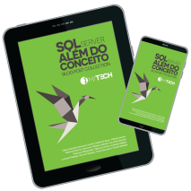

SQL Server - Além do Conceito - Volume 2
O segundo volume da série “SQL Server Além do Conceito” traz agora um conjunto multidisciplinar de capítulos originais, escritos exclusivamente para esta obra. Mais uma vez um grupo de profissionais de diversas áreas do SQL Server se juntaram e escreveram capítulos em suas áreas de domínio. Baixe agora sua cópia e mergulhe no mundo a partir da visão destes autores que dedicaram seu tempo para escrever sobre Administração, Desenvovimento e Business Intelligence. Autores: Diego Nogare | Edvaldo Castro | Leonardo Pedroso | Sulamita Dantas | Demétrio Silva | Thiago Alencar | Nilton Pinheiro | Luciano Moreira | Vitor Fava | Murilo Miranda |Marcelo Fernandes e Cibelle Castro. ________________________________________________________________________________
SQL Server - Além do Conceito - Blog Post Collection
… um grupo de amigos que aqui denominados “SQL Friends” teve a ideia de reunir seus trabalhos em blogs pessoais para criar uma coletânea destes posts e entregar em uma única publicação alguns textos de seus blogs. Os assuntos estão direcionados ao que os autores escrevem geralmente em seus blogs pessoais, podendo ou não estarem correlacionados entre si. O mais interessante, é que em uma mesma publicação, encontra-se um rico e variado conteúdo: Administração de Banco de Dados, BI, Performance dentre outros. “SQL Server: Além do Conceito -Blog Post Collection” foi idealizado para proporcionar uma experiência variada e com conteúdo idem, por isso aprecie o conteúdo e se tiver alguma dúvida ou sugestão, fique à vontade para entrar em contato direto com o autor, através do blog do mesmo que está informado no interior desta publicação. S Q L S e r v e r : Além do Conceito Blog PostCollection – Apesar de NÃO ser um LIVRO formalmente falando, é possível absorver conhecimento técnico de alta qualidade escrito pelos autores, exatamente como pode ser encontrado em seus respectivos blogs.